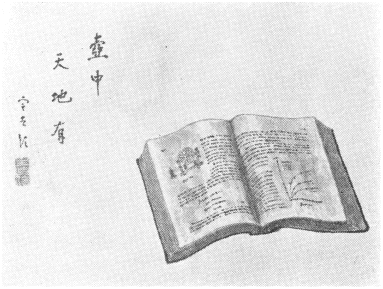
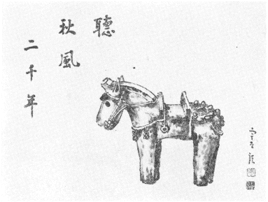
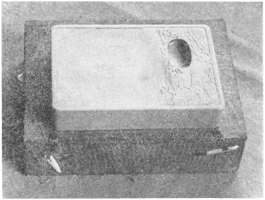

墨絵を始めてから、もう二十年近くになる。北支事変の一寸前頃、難病を患って、伊豆の伊東で、二年間療養したことがある。その時に覚えたのが、随筆を書くことと、墨絵とである。
その後随筆の方は、大分註文が多くなったが、墨絵の方は、あまり註文がなかった。
私の高弟の小林勇君などは、見る見るうちに
それを一日も欠かさず、降っても照っても、毎朝、花期の間中つづけるのであるから、いささか恐れ入る。雨の降る日は、奥さんが傘をさしかけていてくれるのだそうである。これだけの熱心さと内助の功とがあれば、誰だって、絵は上手になる。
勇はそれを才能のせいと思っているらしく、この頃一緒に画を描くと「中谷さんは、いつまで経っても、ちっとも上手くならないね」と、よく言う。決して嘘やお世辞はいわない男であるから、私も我が意を得たりという顔をする。というのは、「素人の絵は、下手なところがよいのだ」という信念をもっているからである。
それには良い例がある。
小宮（豊隆）さんが仙台におられた頃、札幌の行き帰りに、よく小宮さんところへ寄って、文人墨客の会をしたことがある。その時、小宮さんが必ず招待された客の一人は、法文学部のＰ教授であった。非常に熱心な南画家で、画を画くのに必要な道具を、全部揃えてもって来てくれるので、便利だという点もあったらしい。
Ｐ教授は、もうすっかり玄人の域に達し、枇杷であれ、南天であれ、とっとと描いてしまうくらいの腕である。
ところで仙台の大学には、絵の会があって、毎年その展覧会をする。その時には、亡くなられた安井（曾太郎）さんを呼んで、批評をして貰うしきたりになっていた。
或る年、Ｐ教授は、家中一杯に自作の絵を並べて、安井さんを無理矢理に引っ張って行った。
あのおとなしい安井さんのことだから、神妙に、それ等の絵を見てくれたが、うんともすんとも言われない。黙って次ぎ次ぎと見て行かれるだけだったそうである。Ｐ教授は到頭我慢し切れなくなって、最近の会心の作の前で、「この絵は如何でしょう」と聞いてみた。それでも安井さんは「さあねえ」としか言わない。
結局最後に、Ｐ教授は「この中ではどれが比較的いいでしょうかね」と折れて出た。そしたら安井さんが「あれと、あれが一寸面白いね」と指さされた。ところがその二枚とも、三十年前の作品だった。そこでＰ教授は、「僕は三十年間、下手になるべく努力して来たのか」と嘆いたそうである。
まあこういう例もあることだから、なるべく上手にはならないことにしている。そうかと言って、あまり下手でも、
その一例が、此処に出した絵である。中世の物理の教科書の南画というものは、恐らくどなたも御覧になったことがなかろう。機械はウイムスハルストの感応起電機と、ダルソンバールの検流計である。科学博物館へでも行かないと、一寸見られない。それに微分方程式もあれば、飽和曲線のグラフもある。たいていの人は御存じないから、それを説明する楽しみもある。

一つ厄介なことは、うまい種がそう見付からない点であるが、こういう絵は案外応用がきくという利点もある。例えば化学の人にやる場合は、感応起電機の代りに、分析装置の絵を入れる。私の南画の第二の高弟黒須巳之吉博士に呈上する時などは、其処へ耳鼻手術用の道具を描く。グラフのところへは、簡単な耳の解剖図でも入れておく。横文字のところは、何にでも通用する。それで、耳鼻咽喉科の原書の南画という、世界に一つしかない作品が、簡単に出来上がるわけである。
「比較を絶する作品」をつくるには、誰も描かない絵を描けばよい。基本型が出来たら、あと一部分を直して、たくさんの変化をつくる。こういうところは、科学的な南画というべきであろう。
名墨の墨色の研究をしているうちに、自分でも墨絵を描いてみたくなって、こっそり始めたのだが、今から二十年くらい前のことである。
昔、油絵を始めた時に、寺田先生から、「ちっとでも油絵の心得があったら、こうは描くまいと思うような絵で、たいへん面白い」と褒められたことがある。それを思い出して、先生には全然つかずに、勝手に描くことにした。いくら上達しても、美術学校の落第生よりも上手になれないことは、わかり切っているので、結局その方がよいわけである。
もっとも墨と硯だけは、「名墨の研究」からはいったのであるから、思い切って上等なものを使うことにした。もっとも、あまり旧い上等の墨は、どうも使いにくいので、結局嘉慶くらいの青墨が、一番調子がよいことがわかった。硯はやはり端溪である。
十年くらい勉強しているうちに、墨色がよいと、褒めてくれる仲間が大分出来た。大観、関雪級の墨を使っているのであるから、当然のことである。
それに気をよくして、この頃は、人からものを貰うと、お返しに、その絵を描いてあげることにした。例えば、葡萄を貰えば、その葡萄の絵を描いて送るという流儀である。
この方法で、大分いろいろなものをせしめたが、その中での傑作は、宮崎の埴輪である。宮崎に奇特な人がいて、埴輪の名品の模造品をつくっている。もっとも型をとって、昔のものと同じ土を使って、昔どおりに焼いたのであるから、形も材質も、本物の埴輪と同じものである。こういうのは模造品といっていいか、本物といっていいか、ちょっと迷うわけである。
講演に行ったときに、これを見せられて、ひどく気に入ってしまった。よほど欲しそうな顔をしていたものとみえて、帰ってから、主催者の人が、この埴輪の馬を送ってくれた。荷造りはよく注意してあったが、それでも途中で、こわれて来た。しかし埴輪は必ずこわれて出るものであるから、ちっともかまわない。糊でついだら、ますます本物らしくなった。
それで早速この絵を描いて、後漢書の文句を入れて、お礼に送っておいた。そして「もし人形の埴輪の絵が欲しかったら、人形のを送って下さい。多分こわれるだろうが、それはこっちでつぐから、ちっともかまわない」と書いた手紙を出しておいた。

これは埴輪が如何に気に入ったか、ということを示す表現であった。それ切り忘れていたところが、二、三カ月経って、宮崎県庁の人が、大きい箱をもって、玄関へやって来られた。「御註文の人形の埴輪をもって来ました」という口上である。こわれるといけないので、上京の機会があるまで待っていた、という話なので、大いに恐縮した。琴を弾いている埴輪で、国宝第一級の逸品である。
心臓は強い方であるが、この時ばかりは、全く恐れ入ってしまった。しかし嬉しいには、たしかに嬉しかった。それで秘蔵の白端溪と、一番大事にしている嘉慶の名墨とをもち出して、早速一枚描き上げた。それを送ったところが、きわめて丁重な礼状が届いた。話は全く逆であるが、これも芸術の余徳である。しかしこういうことは、そう滅多にある話ではない。
矢野薫という満州の大親分からもらい受けた。北大に低温実験室を作ることになった時、茅誠司君と旅順の低温室を参考に見に行った。仕事の合間、満鉄の高野氏の家で一日絵を描いて遊んだことがあり、そこにちょうど来合わせていたのが、矢野氏で、われわれのように一日絵を描いて遊ぶ人のあることを今まで知らなかったと、この硯のいわく因縁の話をして私にくれる約束をしたのである。話によると矢野氏が東辺道匪賊討伐に協力したお礼に時の満州政府からもらい受けたものであった。たった一日の交遊の見ず知らずの私に貴重な硯をくれる約束も冗談だろうくらいに思っていたら矢野氏の死後遺言で約束どおりになったのである。

端溪でも白いのは尊重されるものである。事実非常にいいもので使い心地は申し分のない気持のいいものである。両面の浮彫もいい彫刻であると思う。今ではどこへ行くにもそれこそハダ身はなさずというふうでアメリカへ行くにも持っていった。
二十年くらい昔の話になるが、一寸むつかしい病気をやって、伊豆の伊東で、二年ばかり療養生活をしたことがある。その頃退屈しのぎに、大分油絵を描いたが、そのうちに墨絵に転向した。だんだん無精になって道具立がおっくうになったからである。
もっとも墨には、前から少し関心をもっていたことも、一つの原因である。寺田先生が晩年に、墨のコロイド的研究をされ、引きつづいて硯の研究をされたがなかなか面白い結果になった。われわれの祖先が、古来親しんで来た墨と硯とには近代科学の眼から見ても、いろいろ面白い問題がたくさん含まれているのである。
寺田先生の研究は、普通市販の墨と硯とについてであるが、あの研究方法を使って昔の中国の名墨や名硯の研究をやってみたら、何か素晴らしい発見がありそうに思われた。その頃丁度日本画を描いていた友人がいて、その男が墨に凝っていた。いろいろな墨の蒐集家のところを廻って、墨をすらせて貰って、墨色図鑑を作っていたが、その中には非常に綺麗な墨色のものがあった。
墨は原則として、濃くした場合は、素人には、墨色の良否がそう目立たない。しかし淡くしてみると、一目にしてその差がわかる。この頃日本で作っている墨は、油煙墨であって、淡くしてみると、茶色がかった濁った色をしている。ところが中国の昔の松煙墨は、いわゆる青墨であって、淡くしてみると、青みがかった透明な色をしている。
青墨ならば、どれでもいいというわけには行かないが、名墨といわれているものは、この青みが非常に綺麗である。中国には、これを「幼児の瞳をみるよう」だといった文人もあるが、まさにそういう感じのする色合である。
この名墨の墨色の因って来るところが、もし科学的に解明されたら、これは一寸した収穫である。役には立たないが、面白いことは、たしかに面白いであろう。それで元気になったら、一つ東洋文化の神秘をうかがう大研究をやろうと決心した。
それについては、予め墨色について一応の知識をもっておく必要がある。それには自分で墨絵を描いてみるのが、一番実際的である。という結論に達した。それで早速硯と墨とを手に入れる算段をしたわけであるが、世の中はよくしたもので、運よく嘉慶の素晴らしい墨と、端溪の画硯とが手に入った。いろいろいきさつはあったわけであるが、前に一度書いたことがあるから、省略することにしよう。
ところでこの嘉慶の名墨の色を活かすのに、一番適当した画題は、雪の結晶である。雪の結晶を顕微鏡で覗いた時に、第一に驚くのは、その色の美しさである。雪は氷の結晶であるからもちろん色はないわけであるが、月光に映えた水晶のように、結晶の細かい構造で反射屈折した光は、薄水色に輝いて、一寸たとえようのない美しさを示してくれるのである。あの雪の結晶の美しさは、油絵では一寸出せないので、中国古代の名墨の墨色で表現するのが、一番いいように思われる。それでこの墨を使って盛んに雪の絵を描いてみた。いいことには、古来東洋には幾万人の画家がいたわけであるが、雪の結晶を南画で描いた人は恐らく一人もないであろう。それでこれは比較を絶した絵であることには、まちがいがない。
自分だけでいい気持になって、描いているうちに、だんだん同調者が出て来た。そして賛をしてくれる人が現われて来た。そうなると話はうまいもので、賛の方が欲しいらしく、私の絵にも、大分貰い手が出て来た。それで家にはほとんど無いが、この頃は、大分世間に流布して来たようである。
うちにある雪の絵は、湯川さんが賛をしてくれたものだけである。これには学士院賞をもらった時に、お祝に作ってくれた歌が書いてあるので、無事に残ったわけである。
一片の十勝の雪を手にとりて
人住まぬ空のたより聞くかも 秀樹
人住まぬ空のたより聞くかも 秀樹
私の雪の研究は、野外の仕事としては、十勝岳の中腹で、天然雪の結晶の顕微鏡写真をとることから始まった。そして低温実験室の中で、これ等の結晶を人工で作る実験の方へ進展して行った。人工で各種の型の結晶が出来れば、地上で結晶の形を見て、こういう型が出来る時の上空の気象状態が推定出来るわけである。結晶は上空で出来て、地上へ降って来るのであるから、降雪中の上空の気象状態の推定に、この方法を使うのは、一寸面白い方法である。本当は海軍の委託研究で、雪中飛行の研究として始めたものであるが、湯川さんの歌のようにしてみると、なかなか風雅なところもある。
（昭和三十一年六月）